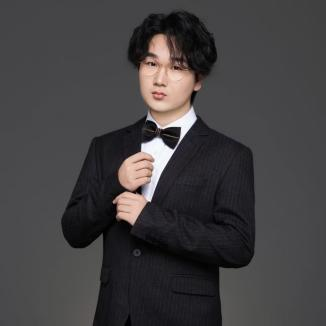
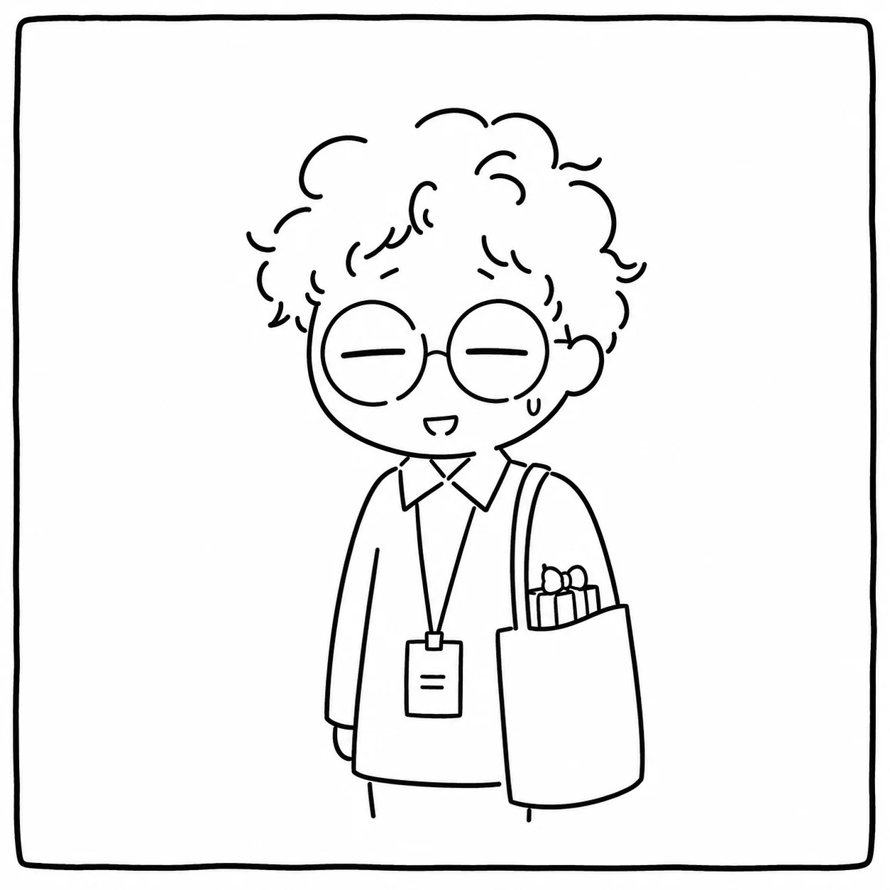
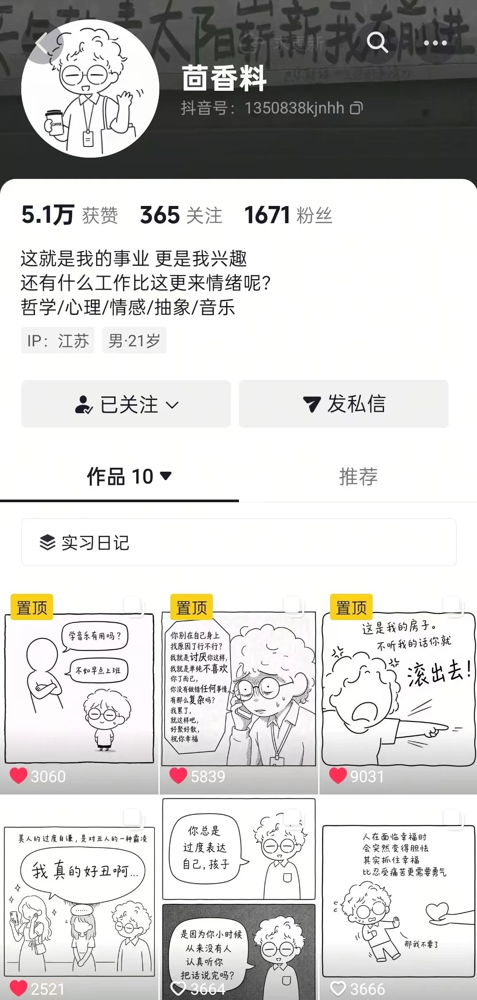
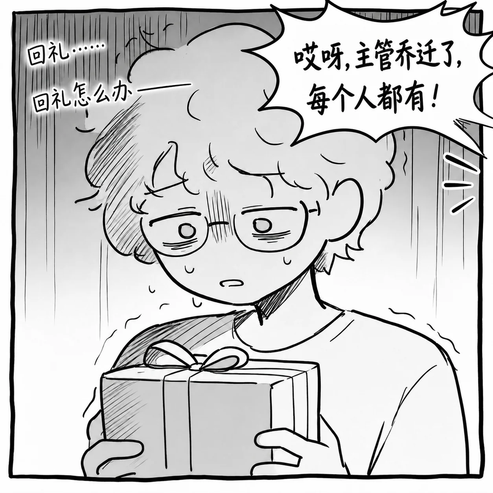
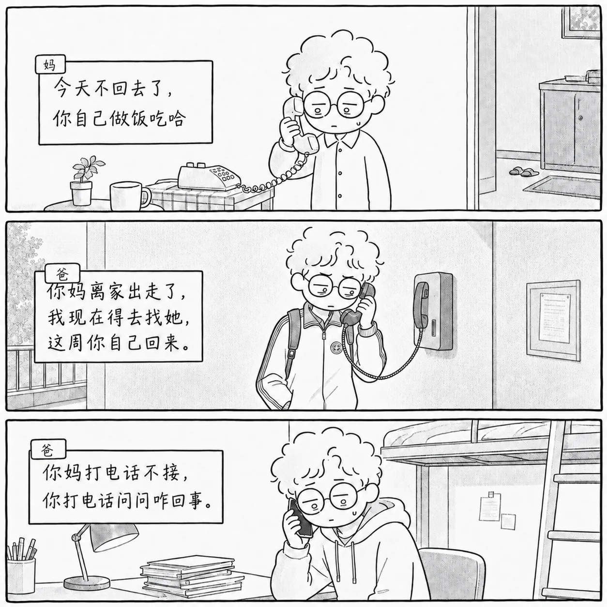
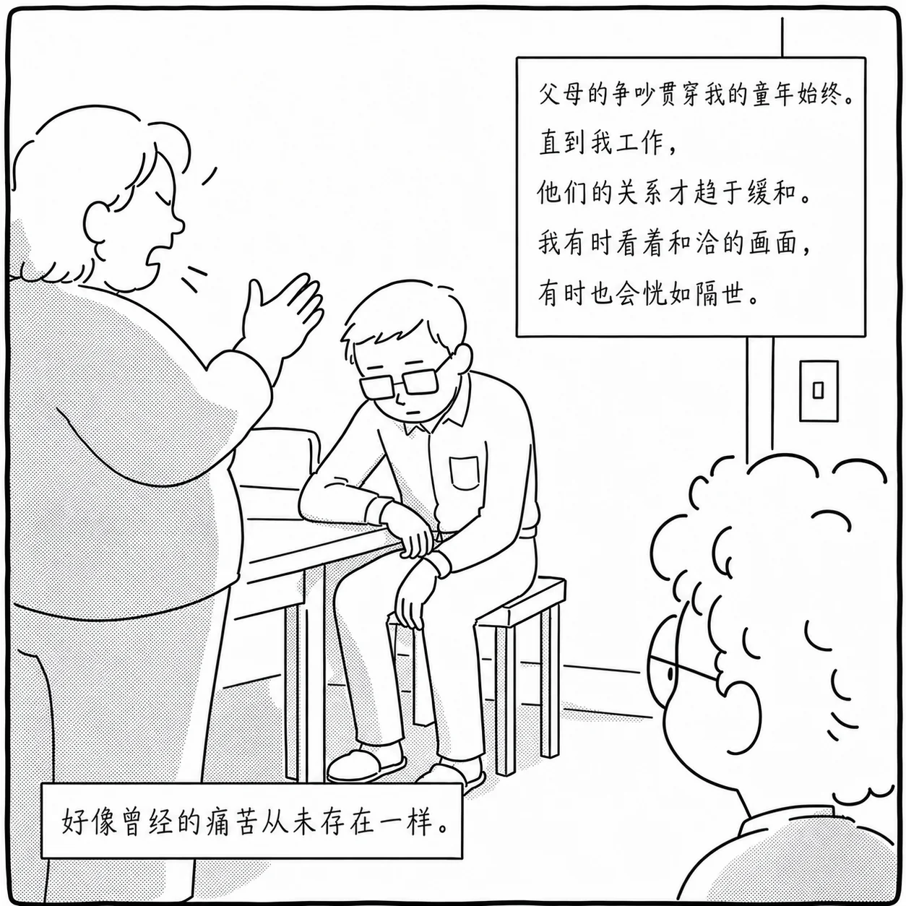
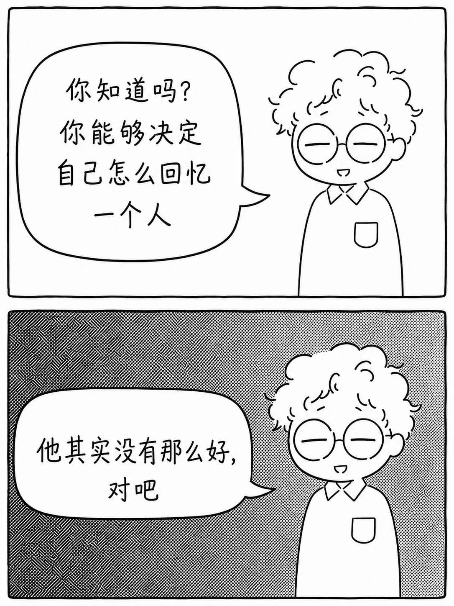

VIDEO 01三国 AI 短剧视觉开发AI SHORT DRAMA / FEATURED CASE
以下仅展示可用于个人求职的局部画面与资产，不涉及片名、主创、平台及未公开剧情。
PORTFOLIO / 2026
AI FILM DIRECTOR
AI-POWERED VISUAL STORYTELLER
A director exploring new possibilities of visual storytelling through AI technology.通过 AI 技术探索影像叙事的新表达。
作品分为视频与音频两个方向。视频项目涵盖 AI 短剧、文旅动画和真人短片；音频项目呈现音乐创作与声音叙事能力。
从世界观、剧本和分镜出发，呈现 AI 影像制作、真人拍摄、剪辑与最终交付。
以下仅展示可用于个人求职的局部画面与资产，不涉及片名、主创、平台及未公开剧情。
VIDEO 03
导演作品 / Directed Short Film
从校园生活中的情感关系出发，讨论 AI 陪伴、孤独感与真实关系之间的距离。独立完成从创意、剧本到拍摄和最终剪辑。
以青年视角切入 AI 时代下的情感关系与心理状态，通过校园生活场景，探讨人与技术陪伴、孤独感以及真实关系之间的矛盾。
独立完成前期策划、剧本创作、分镜设计、导演、摄影及后期剪辑，实现从创意到成片的完整制作。
Concept → Script → Storyboard → Production → Final Edit

VIDEO 04
导演作品 / Live-action Short Film
从青年人的真实处境与成长困惑出发，以生活化场景推进人物选择，完成剧本、拍摄与后期制作。
以青年成长过程中的迷茫、选择与自我寻找为主题，从青年视角出发完成剧本创作与影像表达。
主导完成项目全流程制作，包括前期策划、剧本创作、拍摄执行与后期制作。
Concept → Script → Storyboard → Production → Final Edit
从音乐表演训练出发，为影像与文化主题设计旋律、结构和情绪，让声音参与叙事。
项目定位 结合音乐表演专业背景，为地方文化主题设计具有当代表达的音乐内容。
我的职责 负责音乐风格设定、旋律方向设计、生成辅助、版本筛选和后期调整。
制作方式 从项目主题和画面情绪出发，反复筛选旋律，调整歌曲结构、节奏与情绪走向，使音乐与叙事保持一致。
ABOUT
有音乐表演背景，也持续进行影像、短视频与 AIGC 内容创作。
我是 韩易（HAN YI），一名专注于 AIGC 内容创作与影视编导方向 的创作者。

AI FILM DIRECTOR / AIGC CONTENT CREATOR
Visual Storytelling · Creative ProductionPERSONAL STATEMENT / 个人自述
我的创作从捕捉未说出口的情绪开始。敏感曾被视为负担，如今却成为理解人物与世界的切口。
音乐表演的训练，让我的创作学会从节奏、声音和留白中辨认情绪，并安放那些强烈的感受。当延伸至影像，模糊的情绪找到了具体的人物、场景、对白和镜头。创作成为整理经验、靠近他人的通道。
从日常关系和个体处境中提取母题，借助剧本、分镜、AI 辅助、剪辑与声音设计，将感受转化为可视听的作品。不止于呈现情绪，更追溯其根源，以及它与当下生活的关联。
一路走来，创作学会的不只是完成一部片子，更是把感受变成判断，把情绪变成行动，把行动变成作品。这是它真正的起点。
我从生活中可感知的情绪与问题出发，把抽象感受转化为人物处境、叙事行动和具体影像。以下两部作品记录了这一创作方法。
从青年视角出发进行主题构思、剧本创作、拍摄与后期制作。
参与文化内容、景区动画和地方主题项目的视觉与影像制作。
探索角色、场景、视觉资产、视频生成与最终剪辑的协作流程。
AIGC Content Creator
Video Director
从创意，到分镜；
从生成，到成片。
我关注的不只是“生成一张好看的图片”，而是如何让画面服务故事，让技术服务表达。
持续运营的情感类 AI 漫画账号，通过图文形式完成观点表达与用户互动。
ACCOUNT POSITIONING / 账号定位






持续运营的情感类 AI 漫画账号，通过图文形式完成观点表达与用户互动。
04 / CONTACT — OPEN FOR OPPORTUNITIES & COLLABORATION